ms_realrec_emotional_headset_A72LC42LU78IP_typing_near_sad_fileid_1.wav
Noisy real recording
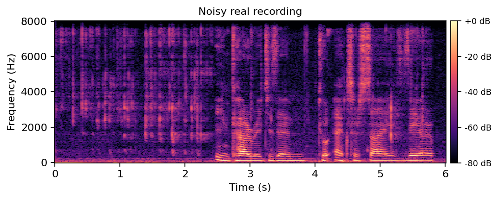
DNSMOS SIG: 3.402
DNSMOS BAK: 2.529
DNSMOS OVRL: 2.390
Enhanced outputs
LiSen
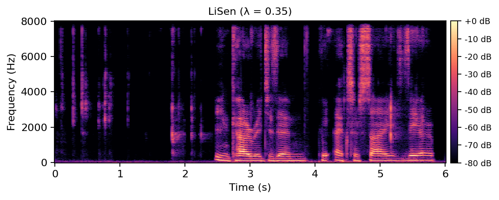
DNSMOS SIG: 3.155
DNSMOS BAK: 3.668
DNSMOS OVRL: 2.765
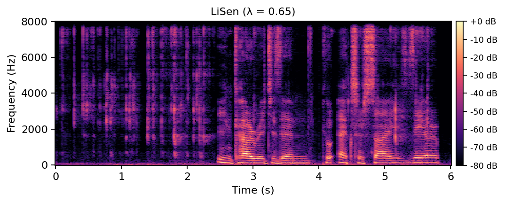
DNSMOS SIG: 3.236
DNSMOS BAK: 3.115
DNSMOS OVRL: 2.574
DPCRN
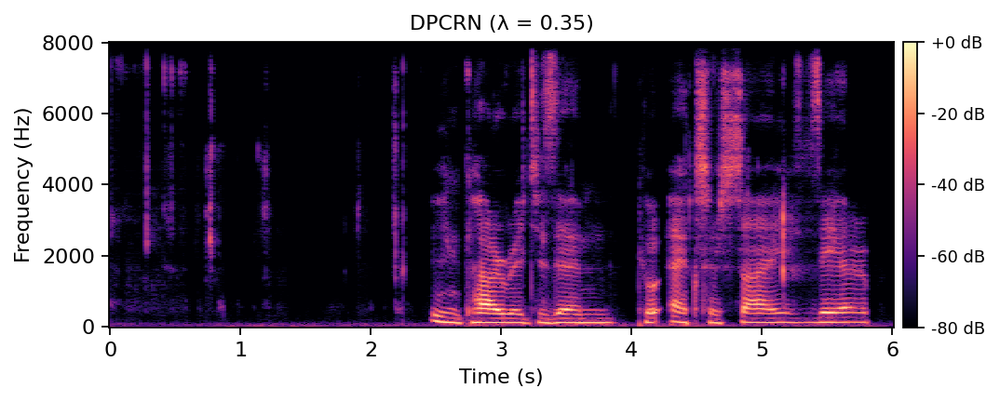
DNSMOS SIG: 3.210
DNSMOS BAK: 3.786
DNSMOS OVRL: 2.861
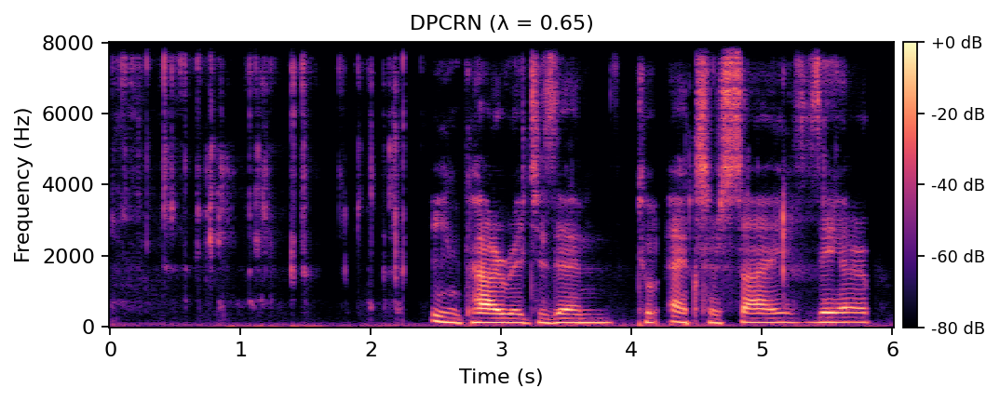
DNSMOS SIG: 3.326
DNSMOS BAK: 3.391
DNSMOS OVRL: 2.792
SEMamba
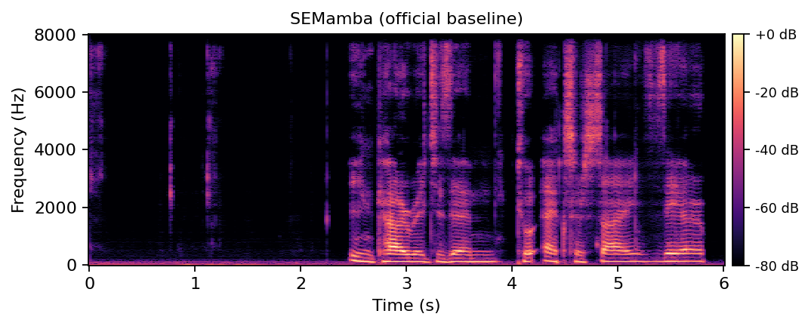
DNSMOS SIG: 3.336
DNSMOS BAK: 3.855
DNSMOS OVRL: 2.997
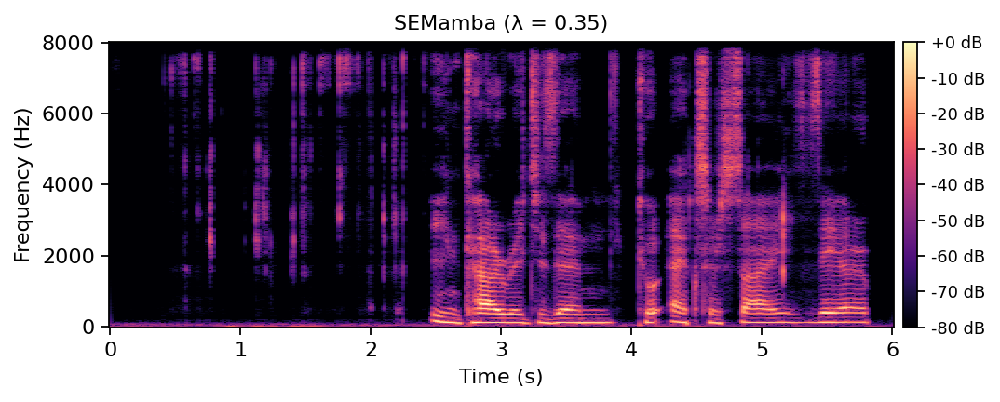
DNSMOS SIG: 3.247
DNSMOS BAK: 3.784
DNSMOS OVRL: 2.892
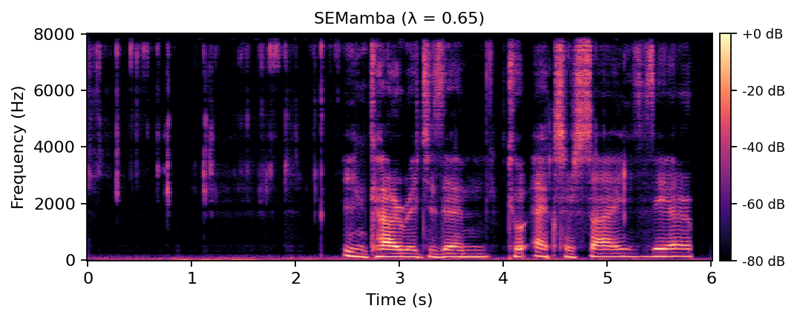
DNSMOS SIG: 3.349
DNSMOS BAK: 3.645
DNSMOS OVRL: 2.911
MP-SENet
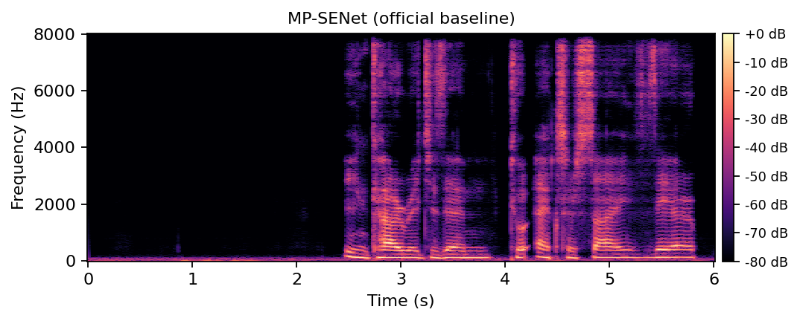
DNSMOS SIG: 3.413
DNSMOS BAK: 4.021
DNSMOS OVRL: 3.128
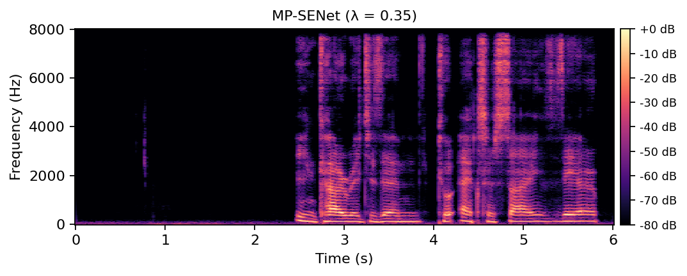
DNSMOS SIG: 3.393
DNSMOS BAK: 4.006
DNSMOS OVRL: 3.107
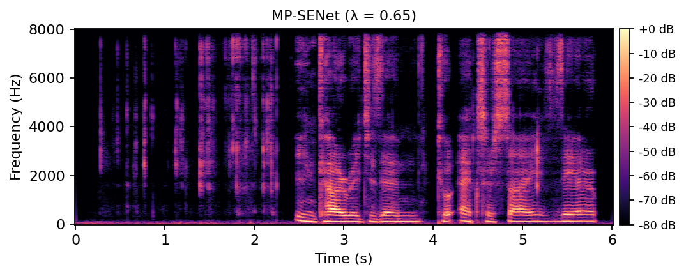
DNSMOS SIG: 3.310
DNSMOS BAK: 3.605
DNSMOS OVRL: 2.857